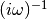
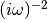
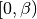
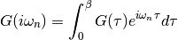
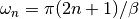
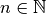

dmft.common¶
Green Functions¶
Interface to treat arrays as the Green functions. Deals with their Fourier Transforms from Matsubara frequencies to Imaginary time.
Functions¶
-
dmft.common.fermi_dist(energy, beta)¶ Fermi Dirac distribution
Examples using dmft.common.fermi_dist¶


-
dmft.common.fft(a, n=None, axis=-1, norm=None)¶ Compute the one-dimensional discrete Fourier Transform.
This function computes the one-dimensional n-point discrete Fourier Transform (DFT) with the efficient Fast Fourier Transform (FFT) algorithm [CT].
Parameters: - a (array_like) – Input array, can be complex.
- n (int, optional) – Length of the transformed axis of the output. If n is smaller than the length of the input, the input is cropped. If it is larger, the input is padded with zeros. If n is not given, the length of the input along the axis specified by axis is used.
- axis (int, optional) – Axis over which to compute the FFT. If not given, the last axis is used.
- norm ({None, "ortho"}, optional) –
New in version 1.10.0.
Normalization mode (see numpy.fft). Default is None.
Returns: out – The truncated or zero-padded input, transformed along the axis indicated by axis, or the last one if axis is not specified.
Return type: complex ndarray
Raises: IndexError– if axes is larger than the last axis of a.See also
numpy.fft()- for definition of the DFT and conventions used.
ifft()- The inverse of fft.
fft2()- The two-dimensional FFT.
fftn()- The n-dimensional FFT.
rfftn()- The n-dimensional FFT of real input.
fftfreq()- Frequency bins for given FFT parameters.
Notes
FFT (Fast Fourier Transform) refers to a way the discrete Fourier Transform (DFT) can be calculated efficiently, by using symmetries in the calculated terms. The symmetry is highest when n is a power of 2, and the transform is therefore most efficient for these sizes.
The DFT is defined, with the conventions used in this implementation, in the documentation for the numpy.fft module.
References
[CT] Cooley, James W., and John W. Tukey, 1965, “An algorithm for the machine calculation of complex Fourier series,” Math. Comput. 19: 297-301. Examples
>>> np.fft.fft(np.exp(2j * np.pi * np.arange(8) / 8)) array([ -3.44505240e-16 +1.14383329e-17j, 8.00000000e+00 -5.71092652e-15j, 2.33482938e-16 +1.22460635e-16j, 1.64863782e-15 +1.77635684e-15j, 9.95839695e-17 +2.33482938e-16j, 0.00000000e+00 +1.66837030e-15j, 1.14383329e-17 +1.22460635e-16j, -1.64863782e-15 +1.77635684e-15j])
In this example, real input has an FFT which is Hermitian, i.e., symmetric in the real part and anti-symmetric in the imaginary part, as described in the numpy.fft documentation:
>>> import matplotlib.pyplot as plt >>> t = np.arange(256) >>> sp = np.fft.fft(np.sin(t)) >>> freq = np.fft.fftfreq(t.shape[-1]) >>> plt.plot(freq, sp.real, freq, sp.imag) [<matplotlib.lines.Line2D object at 0x...>, <matplotlib.lines.Line2D object at 0x...>] >>> plt.show()
-
dmft.common.fit_gf(w_n, giw, p=2)¶ Performs a quadratic fit of the first’s matsubara frequencies to estimate the value at zero energy.
Parameters: - w_n (real float array) – First’s matsubara frequencies to fit
- giw (real array) – Function to fit
Returns: Return type: Callable for inter - extrapolate function
Examples using dmft.common.fit_gf¶


-
dmft.common.freq_tail_fourier(tail_coef, beta, tau, w_n)¶ Fourier transforms analytically the slow decaying tail_coefs of the Greens functions [matsubara]
  See also
References
[matsubara] https://en.wikipedia.org/wiki/Matsubara_frequency#Time_Domain
-
dmft.common.greenF(w_n, sigma=0, mu=0, D=1)¶ Calculate the Bethe lattice Green function, defined as part of the hilbert transform.
Parameters: - w_n (real float array) – fermionic matsubara frequencies.
- sigma (complex float or array) – local self-energy
- mu (real float) – chemical potential
- D (real) – Half-bandwidth of the bethe lattice non-interacting density of states
Returns: Interacting Greens function in matsubara frequencies, all odd entries are zeros
Return type: complex ndarray
Examples using dmft.common.greenF¶


-
dmft.common.gt_fouriertrans(g_tau, tau, w_n, tail_coef=(1.0, 0.0, 0.0))¶ Performs a forward fourier transform for the interacting Green function in which only the interval  is required and output given into positive fermionic matsubara frequencies up to the given cutoff. Time array is twice as dense as frequency array

Parameters: - g_tau (real float array) – Imaginary time interacting Green function
- tau (real float array) – Imaginary time points
- w_n (real float array) – fermionic matsubara frequencies. Only use the positive ones
- tail_coef (list of floats size 3) – The first moments of the tails
Returns: Interacting Greens function in matsubara frequencies
Return type: complex ndarray
See also
-
dmft.common.gw_invfouriertrans(g_iwn, tau, w_n, tail_coef=(1.0, 0.0, 0.0))¶ Performs an inverse fourier transform of the green Function in which only the imaginary positive matsubara frequencies  with  are used. The high frequency tails are transformed analytically up to the third moment.
Output is the real valued positivite imaginary time green function. For the positive time output
 .
Array sizes need not match between frequencies and times, but a time array
twice as dense is recommended for best performance of the Fast Fourrier
transform.
.
Array sizes need not match between frequencies and times, but a time array
twice as dense is recommended for best performance of the Fast Fourrier
transform.
Parameters: - g_iwn (real float array) – Imaginary time interacting Green function
- tau (real float array) – Imaginary time points
- w_n (real float array) – fermionic matsubara frequencies. Only use the positive ones
- tail_coef (list of floats size 3) – The first moments of the tails
Returns: Interacting Greens function in matsubara frequencies
Return type: complex ndarray
See also
Examples using dmft.common.gw_invfouriertrans¶
-
dmft.common.ifft(a, n=None, axis=-1, norm=None)¶ Compute the one-dimensional inverse discrete Fourier Transform.
This function computes the inverse of the one-dimensional n-point discrete Fourier transform computed by fft. In other words,
ifft(fft(a)) == ato within numerical accuracy. For a general description of the algorithm and definitions, see numpy.fft.The input should be ordered in the same way as is returned by fft, i.e.,
a[0]should contain the zero frequency term,a[1:n//2]should contain the positive-frequency terms,a[n//2 + 1:]should contain the negative-frequency terms, in increasing order starting from the most negative frequency.
For an even number of input points,
A[n//2]represents the sum of the values at the positive and negative Nyquist frequencies, as the two are aliased together. See numpy.fft for details.Parameters: - a (array_like) – Input array, can be complex.
- n (int, optional) – Length of the transformed axis of the output. If n is smaller than the length of the input, the input is cropped. If it is larger, the input is padded with zeros. If n is not given, the length of the input along the axis specified by axis is used. See notes about padding issues.
- axis (int, optional) – Axis over which to compute the inverse DFT. If not given, the last axis is used.
- norm ({None, "ortho"}, optional) –
New in version 1.10.0.
Normalization mode (see numpy.fft). Default is None.
Returns: out – The truncated or zero-padded input, transformed along the axis indicated by axis, or the last one if axis is not specified.
Return type: complex ndarray
Raises: IndexError– If axes is larger than the last axis of a.See also
numpy.fft()- An introduction, with definitions and general explanations.
fft()- The one-dimensional (forward) FFT, of which ifft is the inverse
ifft2()- The two-dimensional inverse FFT.
ifftn()- The n-dimensional inverse FFT.
Notes
If the input parameter n is larger than the size of the input, the input is padded by appending zeros at the end. Even though this is the common approach, it might lead to surprising results. If a different padding is desired, it must be performed before calling ifft.
Examples
>>> np.fft.ifft([0, 4, 0, 0]) array([ 1.+0.j, 0.+1.j, -1.+0.j, 0.-1.j])
Create and plot a band-limited signal with random phases:
>>> import matplotlib.pyplot as plt >>> t = np.arange(400) >>> n = np.zeros((400,), dtype=complex) >>> n[40:60] = np.exp(1j*np.random.uniform(0, 2*np.pi, (20,))) >>> s = np.fft.ifft(n) >>> plt.plot(t, s.real, 'b-', t, s.imag, 'r--') ... >>> plt.legend(('real', 'imaginary')) ... >>> plt.show()
-
dmft.common.lin_tail_fit(w_n, inp_gf, x, span=30, negative_freq=False)¶ Perform a Least squares fit to the tail of Green function
the fit is done in inp_gf[-x:-x + span]
Parameters: Returns: Tail patched Green function (copy of origal) real 1D ndarray : The First 3 moments
Return type: complex 1D ndarray
-
dmft.common.lstsq(a, b, cond=None, overwrite_a=False, overwrite_b=False, check_finite=True, lapack_driver=None)¶ Compute least-squares solution to equation Ax = b.
Compute a vector x such that the 2-norm
|b - A x|is minimized.Parameters: - a ((M, N) array_like) – Left hand side matrix (2-D array).
- b ((M,) or (M, K) array_like) – Right hand side matrix or vector (1-D or 2-D array).
- cond (float, optional) – Cutoff for ‘small’ singular values; used to determine effective
rank of a. Singular values smaller than
rcond * largest_singular_valueare considered zero. - overwrite_a (bool, optional) – Discard data in a (may enhance performance). Default is False.
- overwrite_b (bool, optional) – Discard data in b (may enhance performance). Default is False.
- check_finite (bool, optional) – Whether to check that the input matrices contain only finite numbers. Disabling may give a performance gain, but may result in problems (crashes, non-termination) if the inputs do contain infinities or NaNs.
- lapack_driver (str, optional) –
Which LAPACK driver is used to solve the least-squares problem. Options are
'gelsd','gelsy','gelss'. Default ('gelsd') is a good choice. However,'gelsy'can be slightly faster on many problems.'gelss'was used historically. It is generally slow but uses less memory.New in version 0.17.0.
Returns: - x ((N,) or (N, K) ndarray) – Least-squares solution. Return shape matches shape of b.
- residues (() or (1,) or (K,) ndarray) – Sums of residues, squared 2-norm for each column in
b - a x. If rank of matrix a is< NorN > M, or'gelsy'is used, this is an empty array. If b was 1-D, this is an (1,) shape array, otherwise the shape is (K,). - rank (int) – Effective rank of matrix a.
- s ((min(M,N),) ndarray or None) – Singular values of a. The condition number of a is
abs(s[0] / s[-1]). None is returned when'gelsy'is used.
Raises: LinAlgError– If computation does not converge.ValueError– When parameters are wrong.
See also
optimize.nnls()- linear least squares with non-negativity constraint
-
dmft.common.matsubara_freq(beta=16.0, size=256, fer=1)¶ Calculates an array containing the matsubara frequencies under the formula
where in the case of fermions, and zero for bosons
Parameters: - beta (float) – Inverse temperature of the system
- size (integer) – size of the array : amount of matsubara frequencies
- fer (0 or 1 integer) – dealing with fermionic particles
Returns: Return type: real ndarray
Examples using dmft.common.matsubara_freq¶


-
dmft.common.pade_coefficients(g_iw, w_n)¶ Find the Pade coefficients for the desired green Function
Parameters: - g_iw (complex ndarray) – single axis
- w_n (real ndarray) – Matsubara frequencies
Examples using dmft.common.pade_coefficients¶
-
dmft.common.pade_continuation(gfunc, w_n, w, w_set=None)¶ Continate the green Function by Padé
Parameters: - gfunc (complex 1D ndarray) – Green function to be continued
- w_n (real 1D ndarray) – Matsubara frequencies
- w (real 1D ndarray) – real frequency array
- w_set (int or int 1D ndarray) – Amount of frequency point to sample index of points to sample for continuation
See also
Examples using dmft.common.pade_continuation¶


-
dmft.common.pade_rec(pc, w, w_n)¶ Pade recursion formula for continued Fractions
Parameters: - pc (complex ndarray) – pade coefficients
- w (real ndarray) – real frequencies
- w_n (real ndarray) – Matsubara frequencies
Examples using dmft.common.pade_rec¶
-
dmft.common.semi_circle(energy, hopping)¶ Bethe lattice in inf dim density of states
Examples using dmft.common.semi_circle_hiltrans¶


-
dmft.common.tail(w_n, coef, powers)¶
-
dmft.common.tau_wn_setup(parms)¶ return two numpy arrays one corresponding to the imaginary time array and the other to the matsubara frequencies. The time array is twice as dense for best results in the Fast Fourier Transform.
Parameters: parms (dictionary) – with keywords BETA, N_MATSUBARA Returns: Return type: tuple (tau real ndarray, w_n real ndarray)